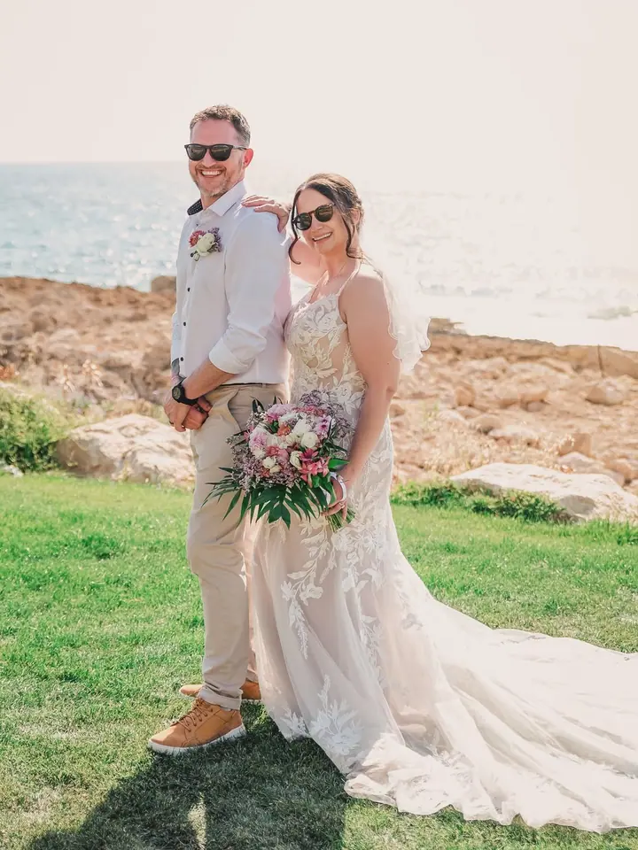
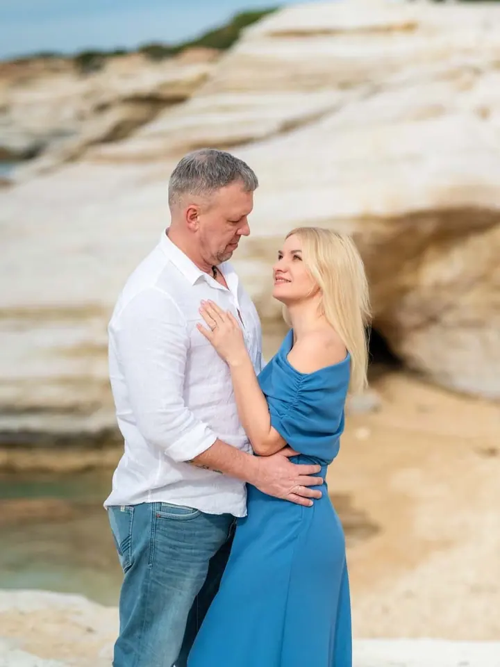
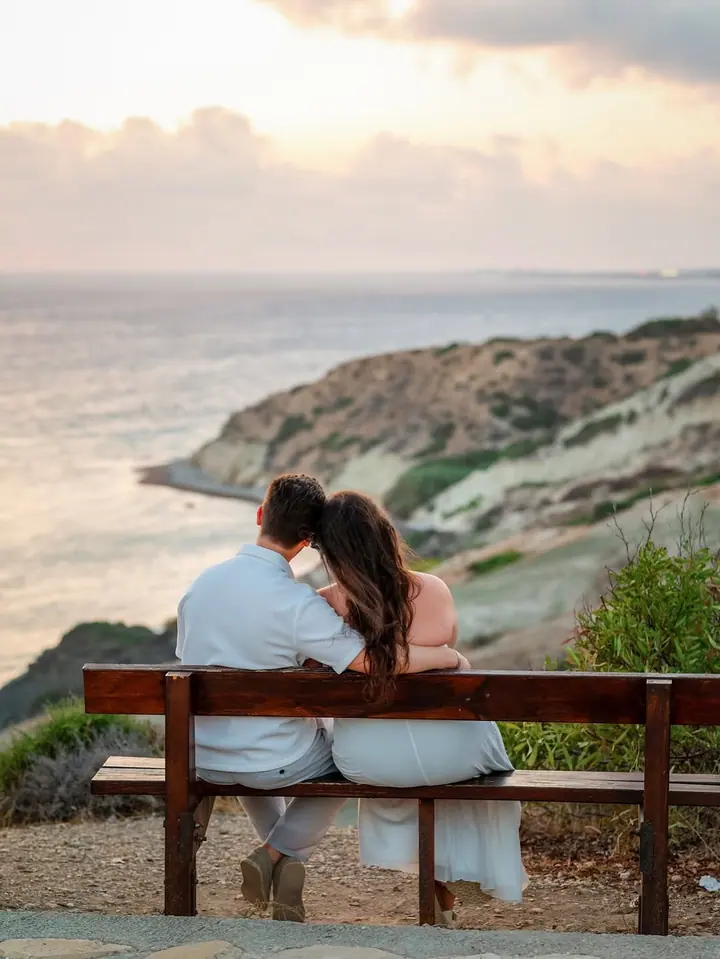

jedna
Svatby a křtiny
Fotím svatební obřady, křtiny i oslavy narozenin a jmenin. Odnesete si fotky, které budou vyprávět váš den tak, jak jste ho prožili.


Jmenuji se Giedre Razmantaite, ale většina lidí mě zná jako Sky. Pocházím z Litvy a od roku 2010 fotím na Kypru svatby, páry a portréty. Chci, aby z focení vznikla fotka, kterou si pověsíte na zeď a budete se na ni rádi dívat každý den.
Více o mně
Co fotím
jedna
Fotím svatební obřady, křtiny i oslavy narozenin a jmenin. Odnesete si fotky, které budou vyprávět váš den tak, jak jste ho prožili.
dvě
Žádost o ruku, první rande nebo prostě focení ve dvou. Fotíme venku u moře a ve skalách, v klidu a bez spěchu.
Portrétní, těhotenské i módní focení. Ráda vám ukážu, že na fotkách můžete vypadat skvěle.
Komerční a produktové fotky pro firmy a značky. Hodí se na web, do e-shopu i na sociální sítě.
Každý okamžik se počítá.
Za objektivem
Pocházím z Litvy a na Kypru žiju od roku 2010. Fotím tu profesionálně a lidé mě znají spíš pod přezdívkou Sky než pod celým jménem.
Fotografie je moje vášeň už hodně dlouho. Stěny mám plné zarámovaných fotek a každá z nich vypráví svůj vlastní příběh. Teď chci tuhle radost sdílet s ostatními.
Chci, aby moje fotka vyprávěla váš oblíbený příběh a vyzařovala dobrou náladu. Fotím svatby a křtiny, rodinná setkání, těhotenství, zásnuby, první rande, první zoubek i nové auto nebo nového mazlíčka. Domluvíme se litevsky, anglicky, polsky i rusky.
Giedre
Pošlete mi e-mail, co plánujete, kdy a kde. Klidně v litevštině, angličtině, polštině nebo ruštině.
Společně vybereme místo, čas a balíček, který vám bude sedět, ať jde o svatbu, rande nebo produktové focení.
Fotíme v klidu a s dobrou náladou, nejčastěji venku na kyperském pobřeží. Postarám se, abyste se před objektivem cítili dobře.
Fotky pečlivě vyberu a upravím a pošlu vám je. Vyberte si tu, kterou si pověsíte na zeď.
Portfolio
Otázky
Žiju a fotím na Kypru. Na konkrétním místě se domluvíme podle toho, co chcete fotit a jakou atmosféru si představujete.
Komunikuji litevsky, anglicky, polsky a rusky, takže se snadno domluvíme i během svatby v zahraničí.
Ne. Fotím i křtiny, oslavy, rodinná setkání, páry, těhotenství, módní a portrétní focení i produkty pro firmy.
Na webu mám připravené balíčky. Napište mi, co plánujete, a pošlu vám nabídku přímo pro vás.
Napište pár vět o tom, co si představujete. photography@bysky.eu